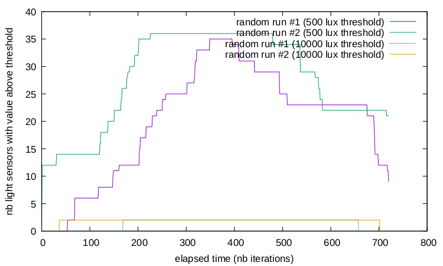
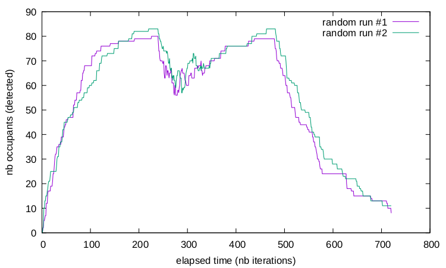

Welcome to the BOLD (Buildings on Linked Data) simulation server.
To start the simulation, PUT the following payload to sim:
The resource sim exposes the current time of the simulation.
As defined in the RDF payload you submitted, the simulation starts on May 21st, 2020 (8am) and ends after 1440 iterations. Each iteration lasts 60s, so the whole simulation lasts 24h in total.
If you repeatedly GET the state of sim, you'll see that the simulation runs much faster. Actual execution time depends on how the server is internally configured (100ms per iteration, by default).
After the simulation starts, the BOLD server creates a hypermedia environment for user agents. The environment in BOLD is a building.
Start with:
This resource describes building B3 of IBM, Dublin. That building exists in the physically world, an RDF description of the building is publicly available.
In the RDF representation of building B3, notice the statement that it is 'part of' Dublin, where Dublin is identified by a URI. Navigate to the corresponding resource:
Navigating in the environment by following links is the first thing agents should do. Building_B3 includes many other links than just 'Building_B3 isPartOf City_Dublin'.
In particular, the building links to floors and floors link to rooms. Rooms then link to data points (sensors, actuators, set points).
As an example, navigate successively to:
Once in room G15, you'll find an occupancy sensor and an on/off switch:
An alternative route to data points goes through the automation systems deployed in the building, such as lighting systems. (It's as if you were going through doors or followed wires and pipes to navigate in the physical building.) The following system feeds (manages light in) room G15:
The links that interconnect building elements are labeled (e.g. with 'isPartOf', as already seen). Link labels, also called relation types, are the RDF properties defined in the Brick ontology.
Occupancy sensors and lighting systems point to physical properties, which hold values (states). The notion of properties comes from the Semantic Sensor Network Ontology (SSN).
As example consider the properties of the coffee room's equipment:
In contrast to rooms and system descriptions, property values change over time. Simulated occupants trigger occupancy sensors and turn lights on. Simulated sunlight influences illuminance sensors, also included in the environment.
As a result, your agents must monitor the environment by repeated GET requests on the exposed physical properties.
All properties are readable but some are not writable. The occupancy isn't, for instance. The on/off property is. To turn off lights in room G15, PUT the following payload to the on/off property resource:
The environment includes 'faults', e.g. a light that remained turned on while no one is in the room anymore. The goal of the agents operating over the BOLD building is to identify and minimize faults.
Each task of the BOLD benchmark comes with its own set of faults, ranging from 'light is on' to 'the room is occupied but illuminance is below the threshold defined by the occupant'.
At the end of a simulation run, the BOLD server stores agent performances in TSV files. The file faults.tsv stores the number of faults left in the environment in each timeslot. The file interactions.tsv stores the number of GET/PUT/POST/DELETE requests sent by agents to the server, along with processing times before agents get an response.
Agents only have access to resources exposed by the BOLD server. However, the server is a configurable software component. It can be used to expose several kinds of environment, with arbitrary simulation logics.
The BOLD server is in fact a rule production system. It manages the state of resources as an RDF dataset and executes SPARQL updates to simulate physical processes occurring spontaneously in the environment.
Some SPARQL updates are executed once, at initialization time (e.g. init-sim-illuminance.rq to initialize illuminance or init-sim-occupancy.rq to initialize occupancy). Other SPARQL updates are executed repeatedly, at the end of every timeslot (e.g. update-sim-reactions.rq to carry out updates of illuminance and occupancy).
The server retrieves faults in the environments by evaluating SPARQL queries over the whole RDF dataset (see e.g. sim-illuminance.rq to retrieve illuminance sensors below a 500 lux threshold or sim-occupancy.rq to track occupants in the building). The result of evaluation is a set of solution mappings, each mapping counting as one fault.
See e.g. the result (as output in faults.tsv) for illuminance for two successive runs over 12h:
and the result for occupancy on the same runs:
The initial RDF dataset and all SPARQL updates and SPARQL queries that define a task are given as argument when running the server. See sim.properties for more details.